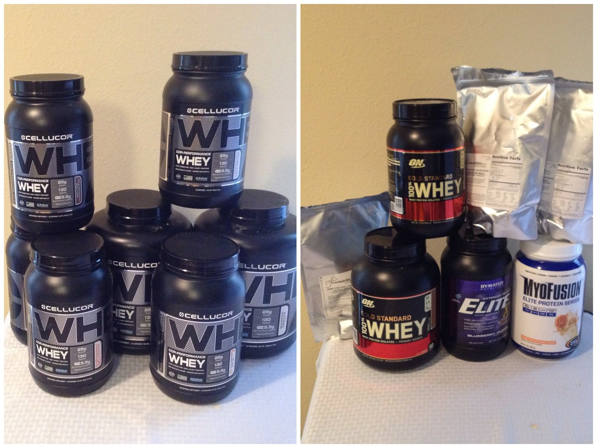

Protein Powder Reviews
I've tried a ton of protein powders! Now, being vegan, I only have plant-based powders, but before then I was like a protein powder conoisseur. I often get asked what protein I use and recommend so here's the protein powder reviews of the ones I've tried! Anything in green is vegan/plant-based protein! (Last updated: 4/2/2016)

Nuzest, Plant-Based Protein: This "Clean Lean Protein" is seriously just that. It is mostly pea protein, but also very minimal other ingredients added. Just natural vanilla, fruit protein, and either coffee, chocolate, strawberry, or cocoa depending on the flavor. It mixes great, it's actually sweet, and is my go-to vegan protein powder. I'd recommend it to anyone looking for a plant-based protein rather than whey. I have a discount code for 15% off nuzest.com - use PBEECHIE- Vanilla - My favorite flavor of them all! You can mix it with anything and it's always a good base. Just 3 ingredients: pea protein, vanilla, and fruit protein. I like to mix it with syrup and stevia and add it to any sweet thing or on toast! I always keep this in stock.
- Chocolate - I think the chocolate flavor is lacking, so I add extra cocoa to it. Other than that, it's good!
- Coffee - Again, I think the flavor is lacking so I don't buy this flavor regularly.
- Strawberry - This is my second favorite flavor of theirs! The flavor is strong and sweet and perfect! Ingredients: Pea protein, vanilla, fruit protein, strawberry, and beet powder.
Cellucor Whey Protein:
This is hands down my favorite brand of whey protein. I first purchased the peanut butter marshmallow on Cellucor.com after hearing about it on Instagram. Up until I tried the newest COR-Fetti flavor, it remained my favorite flavor! I love how thick this whey protein is and the flavors are ridiculously amazing. I have a coupon code for their site! If you use PBEECHIE at checkout you get 25% off the entire order and free shipping! Also if you make a purchase, forward email me your purchase confirmation and I'll send you some more sample packets because I have a ton extra - thecoconutdiariesmail@gmail.com
- Peanut Butter Marshmallow -
It’s got a dominant peanut butter taste but the sweetness of a marshmallow Is there as well! So perfect. - Cinnamon Swirl -
Delicious too. The cinnamon flavor isn’t too overpowering and yet it’s there! Used to be my second favorite flavor but then the newer flavors (corfetti, mint chocolate chip, and smores) won my heart. So this is 5th favorite. Ha. - Cor-Fetti -
Un.
Be.
Lievable. I’ve tried a few other “cake batter” brands (like About Time) but was aaaaalways disappointed. This stuff’s legit. When I first opened it I sniffed it and thought I was smelling Pillsbury Funfetti cake mix. Seriously so so good. It's the sweetest flavor that Cellucor has. I've heard from 2-3 people that it's TOO sweet for them, but most find it incredible. - Whipped Vanilla -
Best vanilla whey I've tasted. It's so sweet like a vanilla milkshake! - Molten Chocolate -
You can probably tell from my list of flavors that I don't really care for chocolate protein. But this is delicious and I crave more of it! It's like a chocolate pudding when mixed with yogurt. - Strawberry Milkshake -
Strawberry is very hard to nail as a protein powder... But this. Omg. It's not too "fake" tasting but it tastes like strawberry for sure!! Ahhhh so good. - Cookies and Cream -
The only flavor I’m a little upset with. It took me about 10 months to finish it all haha. The flavor is good and I know people who say this is their FAVE though. I don’t know why I’m not a fan but I’m not. Every now and again I do crave it, just not often. - Red Velvet - When I first tried it, it reminded me of chocolate mixed with their corfetti. The next time I tried it, I really got the full flavor of it; it's a light chocolatey taste with the sweet hints of cream cheese/cake batter. I wish the cream cheese flavor were more prevalent but overall it's a great flavor, especially mixed with greek yogurt!
- Mint Chocolate Chip -
I looooove this! I dont even like mint chocolate flavor usually ( I always hated thin mints and York peppermint patties) but this is so perfect! Neither the chocolate nor the mint is TOO strong; it's perfectly balanced. Perfect in greek yogurt as a proyo or dip. I love this. - Chocolate Chip Cookie Dough -
This flavor is tasty but not what I expected. I wouldn't call it "cookie dough"; it legit tastes like their cinnamon swirl mixed with cookies and cream. It's delicious, don't get me wrong, but a bit of a let down since I expected cookie dough. - S'mores -
DE. LIC. IOUSSSS. One of my new faves!! It's got the taste of a light milk chocolate mixed with cinnamon-graham flavor. It's not the same cinnamon flavor as the cinnamon swirl; it's got a graham taste. To top it off, it's actually got bits of graham and mini marshmallows in it. Mind blownnn. I love it!! - Chocolate Raspberry Truffle - When I ran out of molten chocolate, I got this for a change! It's a nice change. It tastes like the molten chocolate lightened up a bit in chocolate flavor but then replaced with a hint of fruity raspberry! If you've had razzle dazzle PB crave peanut butter, this is the closest to how the raspberry tastes!! I like the slight hint of fruit in it since I get sick of plain chocolate easily.
Quest Nutrition, Protein Blends: I love the flavors of these I've tried to far!! Also love that there's an unflavored one to buy. Check out my full review right here!
- Vanilla Milkshake
- Chocolate
- Multi-Purpose Unflavored
- Peanut Butter
- Strawberry
- Banana - I like this!!! I didn't think I would because imitation banana flavored things just taste gross and fake usually, but this is perfectttt! One of my favorite flavors they have.
- Salted Caramel -
Not as strong of a flavor as I was hoping :( My mom says it's her favorite flavor, but I just can't pick up on it much! I only got to sample 2 servings, so maybe I just need to try it more for it to grow on me.
Optimum Nutrition, Gold Standard 100% Whey Protein:
For all the ON whey I’ve tried, I always end up a little disappointed… The flavor is never what I expect. Also, when you mix it, it’s not as thick as Cellucor. It ends up runny and mehhh… It’s good yeah but something is always lacking. Maybe it's just because I've experienced the amazingness of Cellucor and can't go back ahah.
- Cinnamon Graham Cracker -
At first I didn't much care for it but the flavor grew on me! The cinnamon flavor hits you first and then you get the graham cracker taste, which ends up the dominant flavor. I never cared too much for graham cracker though so maybe that's why I initially didn't like it. - Rocky Road -
My favorite of the ON whey protein I've tried!! Mostly has a chocolate-y flavor but you also taste a bit of the marshmallow effect - Caramel Toffee Fudge -
Not what I expected but definitely delicious. I'd describe it as a mix between caramel/pb and chocolate....? Unique for sure but I went through the tub fast! So it's good. - Double Rich Chocolate - Tastes very similar to the Cellucor Molten Chocolate flavor except... the ON one is less flavorful/sweet. I like the cellucor chocolate best! But this isn't bad.
Optimum Nutrition, Hydrowhey Protein:
Similar thoughts as the regular whey protein. It's just a disappointment flavor-wise. Nothing spectacular, but not bad. It's thin and mixes easily. Basic. Not a fan. The only difference from their Gold Standard 100% line of protein is that this is hydrolyzed, brekaing down the protein into smaller pieces. This is more readily absorbed by the body for enhanced effectiveness. Theoretically.
- Chocolate Peanut Butter
Optimum Nutrition, Casein Protein: If you're unfamiliar with casein, it's a slow release protein rather than fast acting like whey protein is. You would want to take this usually at night rather than after a workout. After a workout you want protein quickly to your muscles. But at night, taking casein helps preserve any muscle while you sleep. When mixed with liquids, it is thicker than whey protein. I took casein for 4-5 months every night but ended up stopping because it hurt my stomach.
- Cookies and Cream -
Loved this a lot! Cookies and cream is a hard flavor to nail but this was tasty. - Chocolate Peanut Butter -
Meh. Had a nasty aftertaste.
Gaspari Nutrition, Myofusion: The myofusion is pretty thick, I'd say thicker than the Cellucor when mixed. Mixes well though. I like thick :D
- Peanut Butter Cookie Dough -
At first I was extreeeemely disappointed about this. I had been wanting to try this for months after hearing great things. I finally tried it but felt it was bitter and the peanut butter taste isn't really peanut butter. It's "off"; BUT it actually grew to be one of my favorites!! It's one of the flavors I most often grab. - Cookies and Cream - Sooo good! This is the third brand of a "cookies and cream" flavor whey I've had and this is by far my favorite for this flavor. It's perfect. The cookie flavor is dominant and it's almost as if you can taste it. Very similar to the cookies and cream quest bar if you've had it.
- Milk Chocolate - Kind of reminds me of the cookies and cream flavor but without the little cookie bits in it! It's different from a regular chocolate flavor; I like it! And of course, I love the thickness of this brand. Almost as thick as cellucor.
Labrada Lean Body for Her, Whey Protein Isolate: These are great!! They are a bit thicker when mixed with liquids, and they taste good too.
- Vanilla - I love this!! It reminds me of the taste of visalus' birthday cake protein. It's probably my second favorite vanilla now. My favorite is cellucor because it's like a vanilla bean milkshake, but this one is like a birthday cake icing. So good.
- Chocolate -
This is also a great chocolate. Not the most incredible ever, but definitely memorable! I like it. - Peanut -
I would pass on this flavor... It's pretty much just like peanut flour. I don't really see how it's different. It's not really a protein powder. It tastes good though!! But I'd rather use my peanut flour.
Nutriforce, Nutriwhey:
All of these are just okay, not outstanding. They are "thin" proteins, while I like thicker ones.
- Café Cream -
This flavor is actually a bit stronger than I'd like for it to be... It takes a while for the coffee granules to dissolve. But when it does, it mixes evenly! It bakes well though; you just can't use too much because the coffee flavor is strong. - Strawberry -
This flavor is okay. Not bad or not amazing! The Cellucor's strawberry one is much better. The strawberry bits inside of it kind of weird me out texture-ally. - Vanilla -
This flavor is okay. Not bad or not amazing! Just basic. Bakes very well. - Chocolate -
Unlike the coffee flavor, I feel this flavor is too WEAK. It's not as "chocolatey" as I'd like.
Truenutrition.com Whey Protein:
I'm very impressed by what this site offers. They have all sorts of protein (soy, egg, milk, vegan, many more!) and then you can customize it a ton of ways. For example, you can choose splenda or stevia to sweeten. You can choose more or less flavor additive. You can choose to add in certain vitamins. You can choose what form of filtration the whey protein has. And then. There's around 50 insane flavors O_O It's also great because you can purchase just 1 lb at a time! I'm impressed. The only thing I don't like is all of them are very thin when mixed with liquid. I like thick protein.
- Orange Creamsicle -
A little difficult to mix but very tasty. I got the normal-level flavor and it has a LOT of flavor. It's easy to overdose on flavor actually to where it becomes bitter so you have to be careful. - Strawberry Cheesecake -
My faaaave of the three. I wouldn't call it "cheesecake" but the strawberry flavor is there definitely. Also a little difficult to mix; also easy to overdose on flavor. Trust me when I say that you don't want that to happen O_O - Coconut Cream Pie -
Perfectly flavored to where it's not too strong! Kind of neutral but it's there.
Truenutrition.com Plant Protein: To be honest, I thought these would be awful, but I love every kind I've tried! They have endless flavors. It's not as gritty as many plant-based proteins are, and it's also not as dirt-tasting either! It is sweet and I LOVE the custom blends you can make now. So you can add psyllium husk, oat starch, sweet potato powder, or more! They have both the PumpkinPlus Protein and the CranPlus Protein, but I honestly can't tell a difference between the two so it's up to you. Both are pea protein-based so that's the main component.
- French Vanilla - This is great! A very solid basic flavor that's actually pretty sweet. I'm shocked it's not bitter or earthy.
- Cinnamon Bun - Probably the most "earthy" of the flavors I tried. My least fave, but still great.
- Fudge Brownie - This is good but also a little earthy. I think it's best if you add a bit of cocoa powder and some syrup or non-dairy yogurt! Then it's amazing.
- Cookies & Cream - BEST flavor I've tried. It's a legit cookies and cream flavor. There are no cookie bits or anything but it's a good taste.
Giant Sports Whey Protein: These flavors are all thicker than normal because it's a whey/casein blend I believe! They are sweet too. I would compare this to cellucor in thick/sweetness! Me likeeee.
- Cookies and Cream -
My fave fave fave cookies and cream protein I've ever had. SO sweet and it literally tastes like an Oreo milkshake. I don't know how they pulled it off. Most other brands can't get the flavor right. This. was. perfect. - Chocolate Peanut Butter - It's okay! It's like having a liquid Reese's. I wish the peanut butter flavor was stronger, but it's good!
- Banana Shake -
I was hesitant to try this flavor because banana flavor things are usually awful, but this is AMAZING. I may like it even more than the cookies and cream flavor! It's perfectly sweet and thick and delicious. Love. - Vanilla -
Nothing spectacular! It's not bad, but I like my Cellucor vanilla better. - Chocolate -
Again, no real "wow" factor about this. It's not bad, but I like my Cellucor chocolate better.
About Time Whey Protein: I tried sample packets of these. 3 of the birthday cake and 1 of the peaches and cream (which I think is discontinued now). Both mix well but overall I don't care for this brand. I think it's great for people with sensitive stomach though because the only ingredients are whey, flavoring, xanthan gum, and stevia.
- Birthday Cake:
Really disappointing. More just like a sweet cream flavor. I don't know why people rave about it... - Peaches and Cream:
Forgettable. Probably why it's discontinued. - Vanilla: Also underwhelming for me. It SMELLS amazing; it does not taste like so... It's a thin powder (I love thick) so I feel very neutral towards it.
Syntrax, Nectar Whey Protein: I ordered 13 single serve sample packets of this protein. I love EVERY single one!! It mixes so well and is really sweet. Only thing is it's thin (like ON, not thick like Cellucor) and I like my thick proteinnn. I won't go into detail about each flavor but my favorites were Double Stuffed Cookie, Twisted Cherry, and the Cappuccino. The brand itself is sort of expensive which is why I didn't buy full tubs. Maybe one day.
- Apple Ecstasy
- Fuzzy Navel
- Lemon Tea
- Roadside Lemonade
- Pink Grapefruit
- Twisted Cherry
- Strawberry Kiwi
- Cappuccino
- Double Stuffed Cookie
- Peach
- Carribean Cooler
Garden of Life, RAW Meal: Do not do not consume this product. It was recently found to contain heavy metals tungsten, lead and cadmium... This is a raw protein powder. The protein is plant-based! Since it's more of a natural protein powder, the earthy-ness of it is definitely apparent... It's a shocker at first but you adjust if you need raw instead of whey protein!
- Vanilla - I'd say this is more of a neutral taste than super vanilla-y. It's there but not strong. Kind of hard to take down your first time but it's okay..
- Vanilla Spiced Chai - I prefer this over the plain vanilla but it's basically the same review. I had to add stevia to enjoy it.
Sunwarrior, Raw Protein: Tastes better than the RAW Meal if you ask me. Also very earthy since it's raw, but it grows on you! It's thicker than whey protein when blended, and I like that a lot. If I couldn't have whey protein and only had the plant-based protein, I'd go with this brand.
- Warrior Blend, Vanilla
Dymatize, Elite XT: The Elite XT is a micture of whey and casein protein. Since casein is thicker than whey, this is verrrry thick when mixed. I love that.
- Blueberry Nut Muffin -
Honestly, it's got a bitter aftertaste because it's a little gritty. It almost overtakes the blueberry flavor. The nut flavor isn't apparent at all. BUT somehow I love this one ahaha. If you don't use too much, the bitterness isn't really there. It's not how I expected it to taste but I love it. When mixed with cocoa powder, it tastes like store-bought cupcake icing. So this is how I usually use it.
Designer Whey: This is the very first brand of protein powder I ever tried, how cute. It's fairly cheap but really basic. There's nothing wrong with it, there's just also nothing really special about it if you ask me. It mixes fairly well; not too thick, not too thin.
- French Vanilla -
Yep. Not much to say here. Just vanilla. - Luscious Strawberry -
I hated this one. Strawberry protein is hard to nail in my opinion. This one failed. - Gourmet Chocolate -
It's okay. Not extremely chocolatey but it's there. Can you catch onto my apathy towards this brand? - Vanilla Praline -
Mostly vanilla flavor. The caramel (praline) isn't really that strong; it just makes you think "hm. this vanilla is a little different than regular." - Vanilla Almond -
Also mostly vanilla with a hint of almond. Kind of just tastes like they poured almond extract in it. If you know what almond extract tastes like, then just imagine your standard vanilla with almond extract. Meh.
Body Fortress Whey Protein:
This is the cheap, walmart protein powder. All I can say is do not buy it. I don't even want to list in on here. My boyfriend has extra and I tried a few servings. The ingredients are awful and my stomach hurt SO BAD every single time. It's terrible. Don't be cheap.
- Chocolate
Protizyme, Whey Protein: I heard good things about this brand, but it was kind of underwhelming. Just average; not too thick or thin. It mixes well too.
- Vanilla Cake -
Kind of a disappointment. Upon smelling it, it smells juuuuust like a vanilla birthday cake. To a T. But after I mixed and tasted it... that sensation went away and it had a chemical-taste to me. Very unpleasant, even when I tried to add some stevia.
Fit Miss Protein Blend: This is a blend of various forms of protein including whey, casein, and egg albumin. So it's a little thicker than a plain whey protein would be.
- Vanilla Chai -
I didn't expect much of this brand but it's SO good! I'm so happy I got a lot of this to use. It's not really "chai" flavor but it's not just vanilla. Very good.
PowerCrunch Proto Whey
- Double Chocolate -
You know the chocolate part of a Cadbury Creme egg? That's EXACTLY what this flavor tastes like. It. Is. Delicious. I used to love those eggs D; And they're a weakness for me every year around easter. I'm so glad I found this brand of chocolate! I'm not even a huge chocolate protein fan so the fact that I'm in love with this says a lot.
Isoflex Whey Protein
- Peanut Butter Chocolate - When I first opened this, I was excited to see it has actual chocolate bits in it! But tasting it was a different story. It was AWFUL. It doesn't taste like peanut butter OR chocolate. If anything, it has an espresso taste to it. So weird...
- Chocolate -
Better than the peanut butter chocolate flavor for sure. Still not too great/special, but not awful.
Muscle Tech, Phase 8 Protein
- Chocolate -
This protein is a bit different than either whey or casein. It is a mixed protein formula that "feeds your muscles for 8 hours" supposedly. It contains 6 different types of protein including whey, casein, and milk protein. For this reason, the texture is thick yet fluffy and I love it mixed in yogurt!! Also, the taste is delicious! The chocolate is smooth yet very present. A very good chocolate for those who are picky with chocolate like me.
Muscle Tech, 100% Casein
- Chocolate -
Like the Phase 8 protein that I tried of this brand, the flavor is very good! I likey. This casein isn't as thick as some casein I've had before, but it's thick nonetheless. No complaints here and it's not as harsh on my stomach as a lot of casein is for me.
Vega One, All in One Nutritional Shake
- Vanilla Chai - This is really gross. I threw it away. The taste is just so off putting. Also because it is a nutritional shake, it turns green, so that doesn't help ha. I wouldn't recommend.
- Chocolate - This one is tolerable! I like to mix it with water, stevia, and cocoa powder. I actually do like to get this because the nutritional value of it is ridiculous - so fortified. But it's pricey so I don't get it often. If you struggle to get proper nutrition from fruits and vegetables, I'd recommend getting this.
Vega Sport, Plant-Based Performance Protein
- Vanilla - Unlike the Vega One, this is soooo good. It would be great as a smoothie blended with ice and almond milk. I really want to try the mocha flavor!